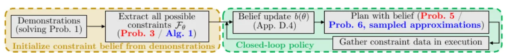
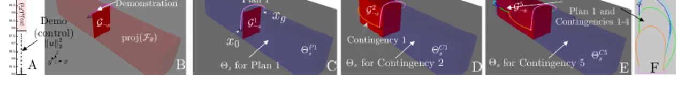
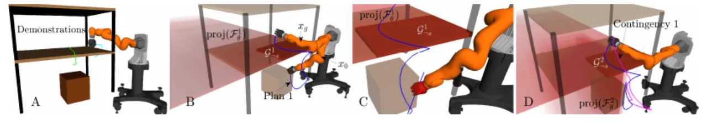
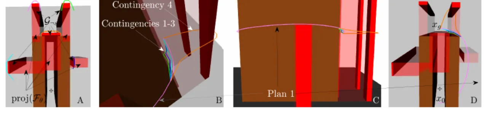

约束学习 (constraint learning) 天生 ill-posed：一条演示往往对应无穷多个可行约束。本文用 robust optimization 恢复所有与演示一致的约束集合 Fθ，转化为约束信念 (belief)；再用它做 chance-constrained 规划，并在执行中不断用传感数据更新信念、闭环重规划——在保证概率安全的前提下尽量高效地完成任务。
把任务建模为「带约束的优化」并从演示中学习 cost 与 constraint，是学习复杂操作/移动任务的有力框架。但约束学习的核心难题是 unidentifiability of the constraints：一条演示常常对应一个无穷大的可行约束集合。
"a core problem in LfD, and constraint-learning in particular, is the unidentifiability of the constraints: there is often an infinite set of possible constraints which are sufficient to explain a demonstration."
此前工作 [1] 通过只规划「保证安全 (guaranteed-safe)」轨迹——即满足所有与数据一致的可能约束——来回避这一问题。但在真实场景里可能约束的集合太大，这样做会让规划直接不可行（例如杂乱家居环境中的机械臂：除非演示恰好激活了每一个约束，否则无法宣称一条轨迹一定安全）。
本文的洞见：在巨大约束不确定性下规划，关键是要对可能约束的集合进行推理、规划出在安全与效率间权衡的轨迹，并用执行中采集到的约束信息去更新这个集合。方法允许轨迹穿过「可能不安全」空间 projC(Fθ)，但要最小化约束违反。
整体分两步走：(1) 从演示构建约束信念 b(θ)；(2) 用信念做开环 chance-constrained 规划，并把开环轨迹组装成闭环策略——边执行、边用传感数据更新信念、边重规划，直到完成任务。论文同时给出「理想但难解 (红)」与「可解近似 (蓝)」两套变体。

演示被视为近似求解「前向任务」Prob. 1（一个带约束优化）到局部最优，即在容差内满足 KKT 条件。逆问题 Prob. 2 反过来求解：找到参数 θ 与 Lagrange 乘子 (λ, ν)，使演示的 KKT 条件（primal feasibility、complementary slackness、stationarity）成立。这样得到的每个 θ 都能让演示成为局部最优——但满足条件的 θ 通常有无穷多个，其集合 Fθ 正是「约束不确定性」的刻画。
假设未知约束 A(θ) 可表示为约束空间中「若干 box 的并」（任意形状都能用足够多 box 逼近，附录再放松此假设）。作者证明此时 Fθ 同样是 box 的并。利用鲁棒线性规划的恒等式 sup‖u‖∞≤1 aᵀu = ‖a‖₁，把「KKT 在整个 box θ+s·u 上鲁棒成立」写成不含 u 的形式，得到可用 MILP / MISOCP 表示的约束。以 box 的体积（几何均值 conic-representable，是体积的单调变换）为目标最大化，即可解出 Fθ 内最大的 box；反复「提取—移除—重解」直到不可行，就能完整枚举整个 Fθ（Alg. 1）。由此还能定义 learned guaranteed-safe / unsafe 集合 Gs / G¬s（对所有 θ∈Fθ 都安全/不安全的约束状态）。
理想的 Prob. 5 要求新任务的轨迹以足够高概率满足不确定约束，但需在任意形状 Θs 上对高维 θ 积分，intractable。可解的 Prob. 6 把 Θs 限制为若干 box 的并，对每个 box 做「Riemann-sum」式积分（本文聚焦 uniform prior p(θ)，可闭式积分、且体积的单调变换为凹）。对 piecewise-affine 动力学，Prob. 6 可写成 MISOCP（体积约束使其成为 MIBLP，可解但可能慢）。Theorem 3：Prob. 6 的解是 Prob. 5 的一个「保证可行、可能次优」的解。两个目标变体：Prob. MCV（最小化期望约束违反数，用 Prob. 6-εmin）与 Prob. MEC（最小化一般代价，用 Prob. 6-R）。
当约束/动力学非线性、Prob. 6 无法写成 mixed-integer convex program 时，改用有限采样近似：MCR（Minimum Constraint Removal，增量建路图、违反最少约束地连接起终点，近似 Prob. 6-εmin）与 BTP（Blindfolded Traveler's Problem，对加性代价用带安全概率 p(e) 的路图，A* 以修正边代价规划，近似 Prob. 6-R）。代价是这些采样解不保证对 Prob. 5 可行。
执行中传感到的 possibly-safe / unsafe 状态集合 Cs, C¬s（可来自 bump 传感、有限量程 LiDAR、或无法精确定位的 uncertain contact 测量），用来把与观测一致的约束筛出 Fθs,¬s 并做 Bayesian 后验更新 bex(θ)。闭环策略在 receding-horizon 下：每步更新 b(θ)、重解 Prob. 6-εmin / 6-R、当旧计划次优或不安全时切换。由于只在「可能不安全」的状态处才可能切换，策略可表示为一棵稀疏的 policy tree（初始计划 + 少量应急 contingency），可离线预计算以支持实时执行。
在三个场景验证方法能在高维系统上安全、高效地规划：混合不确定性四旋翼、7-DOF 机械臂（含接触传感不确定性）、四旋翼迷宫。约束从 Fθ 中 uniform 抽样评估。指标：Prob. MCV 看约束违反数，Prob. MEC 看任务代价（越低越好）。
四旋翼载不确定重量的载荷、绕不确定障碍飞行。仅 1 条演示学习 7D 约束 θ∈R⁷（6 维障碍 + 1 维控制）。学到 ‖u‖₂²≤97.85 保证安全，而 ‖u‖₂²∈(97.85, 100] 可能不安全。解 Prob. 6-εmin（双积分近似、每条轨迹限 30 步）得 Plan 1：抬高越过所有可能障碍，同时预计算应急计划。

| 策略（约束违反数，均值±标准差，越低越好） | violations |
|---|---|
| Ours（对无穷约束集合优化） | 0.54 ± 0.94 |
| Scenario approach [26]（采样并全部强制） | 1.30 ± 1.36 |
| Optimistic（只避 G¬s，违反后重规划） | 9.10 ± 4.65 |
运行时间：Alg. 1 约 3.3 s，Prob. 6 约 1.1 s。
机械臂在储物架附近作业。2 条演示学习 θ∈R⁶ 的货架约束，任务是从架下移到架上（代价为路径长度 Σ‖xt+1−xt‖₂），用 100 个 uniform 样本喂给 BTP。执行中臂撞上一个未建模的下层障碍（箱子）；接触传感器（uncertain contact model）告知碰撞，方法把 300 个末端采样点加入 C¬s。此时方法自动判定单个 box 无法解释全部数据，把参数升级为两个 box（θ∈R¹²），重提取 Fθ、重采样 BTP，绕开不确定区到达目标。

| 策略（任务代价 rad，越低越好） | cost |
|---|---|
| Ours（演示 + union-of-boxes） | 8.19 |
| BTP without demos / boxes | 18.24 |
| Optimistic approach | 143.31 |
运行时间：Alg. 1 约 20 min，BTP 约 5–20 min（可预计算 swept volume 加速）。说明方法可扩展到高维系统、能检测约束表示不足、并利用复杂接触测量。
杂乱迷宫中的四旋翼，配 2 m 半径 LiDAR。棕色障碍已知；5 条演示揭示 5 个障碍（θ∈R³⁰）但对尺寸信息很少。解 Prob. 6-R（直接在连续 b(θ) 上优化、避开 inevitable collision states、用双积分轨迹热启动非线性优化）。Plan 1（粉色）智能权衡风险与性能：右移并升高绕开所有可能障碍以保持高速、低代价，并对可能通道被部分/完全堵塞的情形网格化地预计算 contingencies。

| 策略（任务代价，越低越好） | cost |
|---|---|
| Ours（Prob. 6-R，连续信念） | 1.28 ± 0.27 |
| [1] guaranteed-safe（保守） | 6.29 |
| [27] optimistic over frontier subgoals | 5.51 ± 1.65 |
运行时间：Alg. 1 约 1 s，Prob. 6 约 1 min。[27] 因探索棕色障碍间可能的死胡同而代价更高。
作者在结语中明确表示未来要「用并行提取和快速整数规划 [40] 加速」。实验中 7-DOF 臂的 Alg. 1 + BTP 需 20 min 与 5–20 min；MISOCP / MIBLP 在 Nbox 较大时可能很慢——难以直接实时。
Fθ 的可解提取建立在「约束可表示为 box 的并」之上。若真实约束需大量 box 逼近会低效；实验中也出现「单 box 无法解释数据、需自动升级为多 box」的情形——表示能力与效率之间存在张力。
Prob. 6 的精确 chance constraint 只对「能在 box 上闭式积分、且积分的单调变换为凹」的先验成立；本文正文只处理 uniform p(θ)（其它分布的扩展放在附录）。
原文指出：当问题无法写成 MICP 而改用采样近似时，「they are not guaranteed to return a feasible solution to Prob. 5, as it depends on the constraints that are sampled.」
离线预计算 contingency 以支持实时执行，需假设「运行时不出现未建模障碍」、离散化连续传感测量、并在有限树深处终止分支；若假设不成立则只能在线重新规划，「it can be slow」。